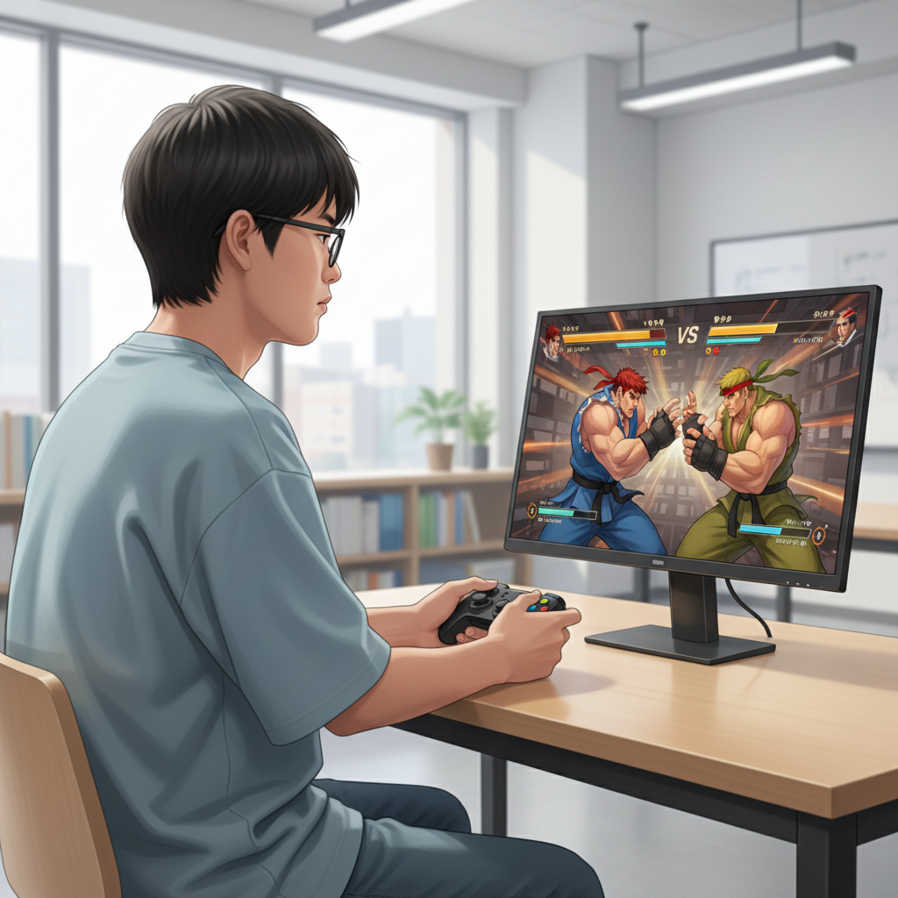
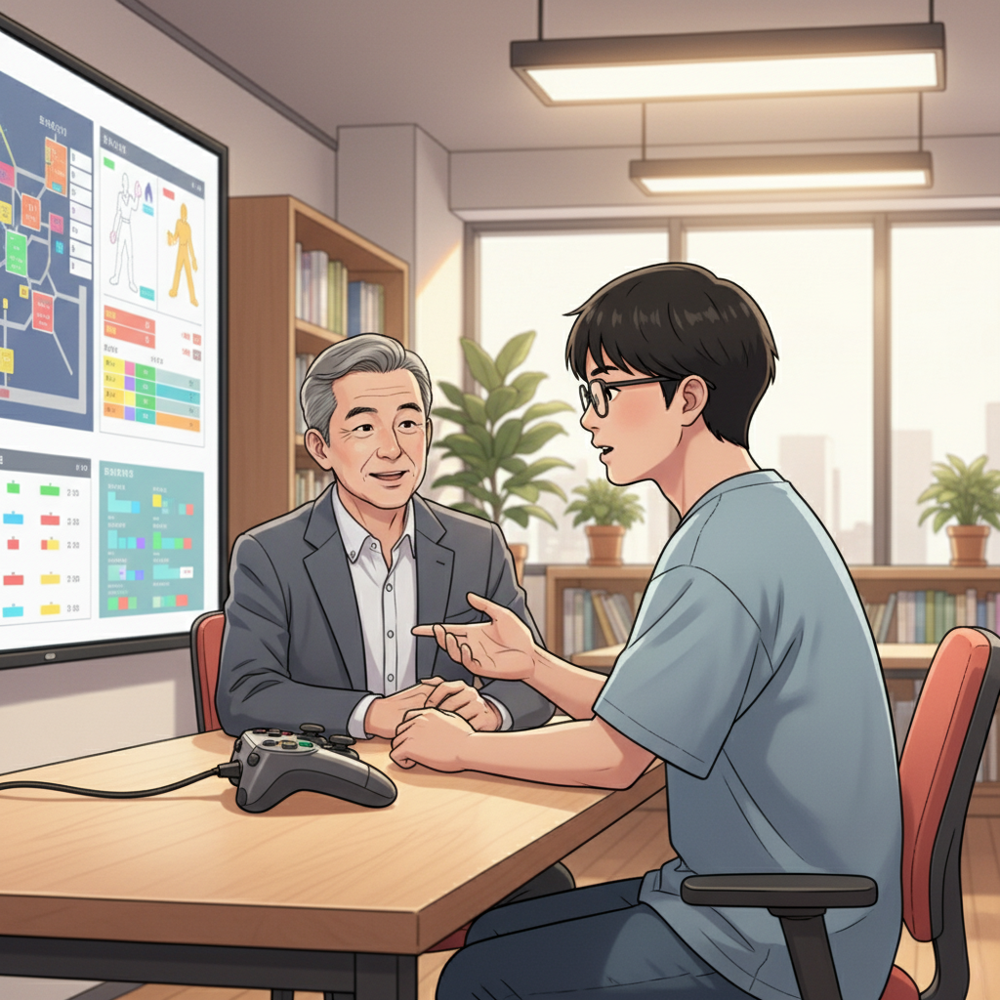
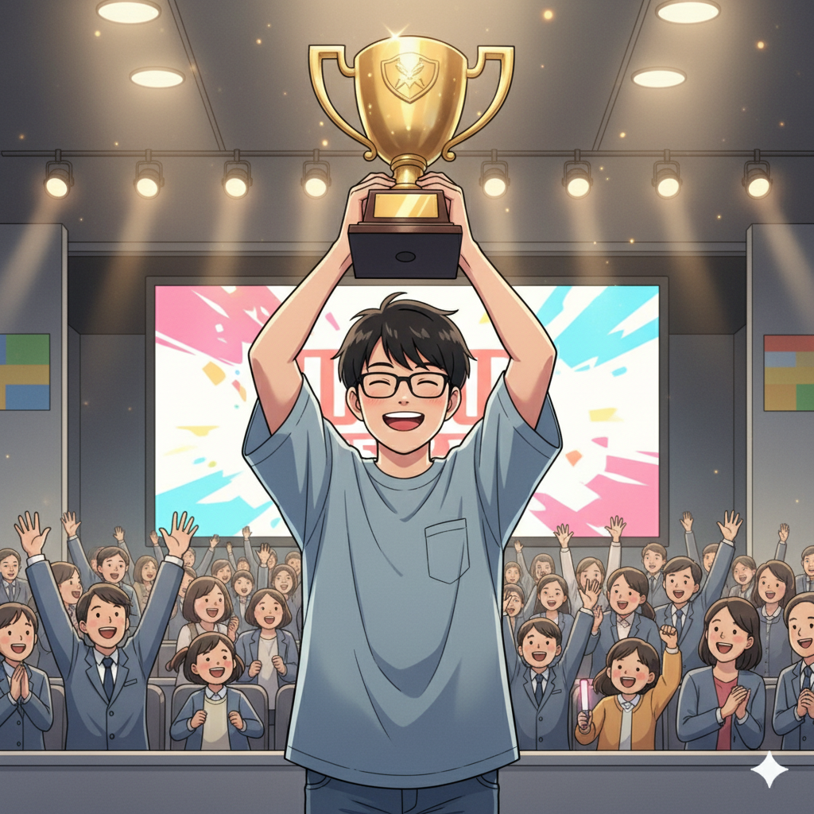
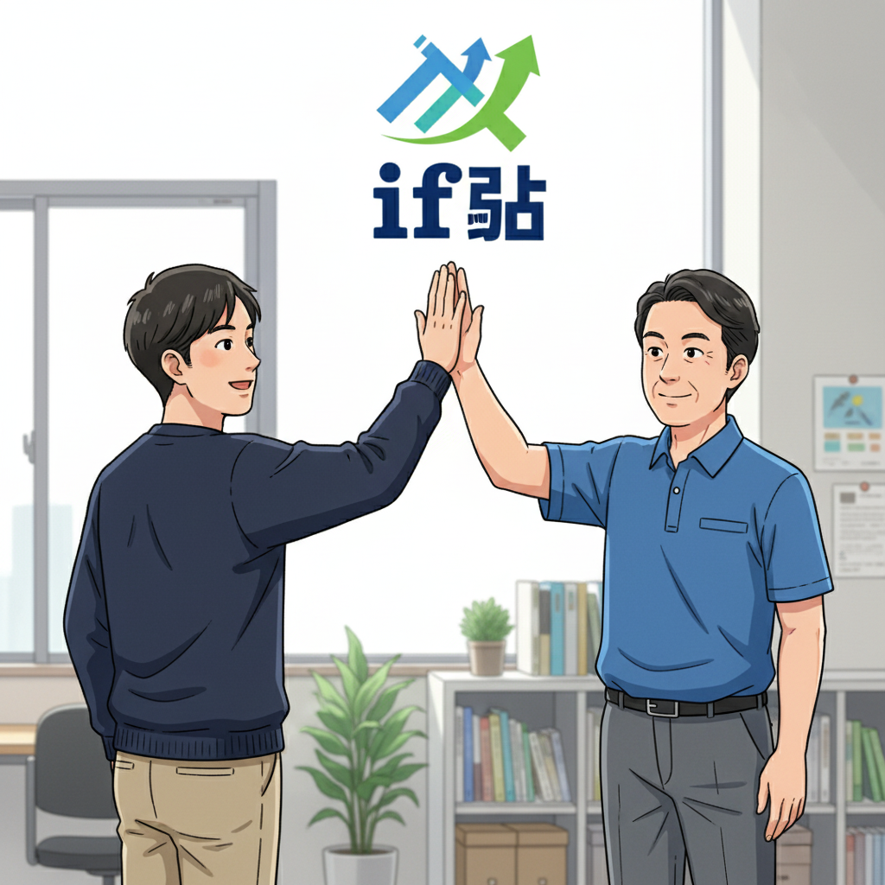

集中力と反応速度が武器に！SF6との出会い（Y君）

「小さい頃から、一つのことにのめり込むタイプだったんです」と語るY君。ゲームに熱中すると、周りの音が全く聞こえなくなるほどの集中力を持っていました。小学校の頃から様々なゲームをプレイしていましたが、高校生になり、ストリートファイター6（SF6）に出会って、その才能が開花します。独特のキャラクターデザインと奥深いゲーム性に惹かれ、毎日何時間も練習に没頭。持ち前の反応速度と集中力を活かし、メキメキと腕を上げていきました。
最初はなかなか勝てませんでしたが、何度も対戦動画を見て研究したり、上手い人にアドバイスをもらったりするうちに、少しずつコツを掴んでいきました。負けるたびに悔しい思いをしましたが、諦めずに練習を続けた結果、徐々に勝てるようになっていったそうです。
if塾との出会いと成長（Y君、塾頭）

そんなY君がif塾に出会ったのは高校生の時。学校生活になじめず、将来に不安を感じていたY君は、塾頭との出会いをきっかけに、自分の特性を強みに変えることを学びます。「Y君の集中力と反応速度は、eスポーツの世界で大きな武器になる」と塾頭はY君にアドバイス。if塾でプログラミングを学びながら、SF6の練習にも励む日々を送りました。
if塾では、同じように発達特性を持つ仲間たちとの出会いもありました。互いに得意なことを教え合ったり、励まし合ったりするうちに、Y君は自信を取り戻していきました。プログラミングのスキルは、SF6のデータ分析や対戦戦略の立案にも役立ち、Y君の成長を加速させました。
塾頭は「Y君の才能は本当に素晴らしい。彼は自分の特性を理解し、それを最大限に活かす方法を見つけた。これは、他の子どもたちにとっても大きな希望になるはずだ」と語ります。
大会優勝！自信と次の目標（Y君、塾長）

努力の甲斐あって、Y君はついにSF6の大会で優勝を果たします。優勝が決まった瞬間、Y君は喜びを爆発させました。それまで自信がなかったY君にとって、この優勝は大きな成功体験となりました。「諦めずに努力すれば、必ず報われる」ということを実感したY君は、次の目標に向かって走り始めます。
塾長は「Y君の活躍は、if塾の理念を体現している。彼は自分の特性を理解し、それを才能に変えた。これは、他の子どもたちにとっても大きな励みになるはずだ」と語ります。塾長自身もADHD・ASDの診断を受け、中学時代は特別支援学級に通っていた経験があるからこそ、Y君の苦労や努力を誰よりも理解していました。
Y君は現在、プロゲーマーを目指しながら、if塾で後輩たちの指導にもあたっています。自分の経験を活かして、同じように悩みを抱える子どもたちの背中を押したいと考えているからです。
eスポーツは可能性を広げる！未来へのメッセージ（Y君、塾長）

Y君は、「eスポーツは、発達特性を持つ子どもたちにとって、大きな可能性を秘めた世界だと思います。集中力や反応速度といった特性は、eスポーツの世界で大きな武器になります。自分に自信が持てない人も、まずは好きなゲームに挑戦してみてほしい」と語ります。
塾長は「if塾では、Y君のように、自分の特性を活かして活躍できる子どもたちを応援しています。プログラミングやITスキルを身につけながら、自分の好きなことに没頭できる環境を提供しています。将来、学生起業を目指すことも可能です。私たちと一緒に、自分らしい成長の形を見つけてみませんか？」と呼びかけます。
if塾は、発達特性を持つ子どもたちが、自分の才能を開花させ、社会で活躍できる未来を信じています。あなたも、if塾で新しい一歩を踏み出してみませんか？
🎯 興味を持っていただいた方へ
if塾では、発達特性を持つ子どもたちの「好き」を「才能」に変える教育を行っています。現在の記事内容と実際の活動に大きなズレはありませんが、詳細については直接お問い合わせください。
📌 記事について
この記事は、塾頭による完全自動化への挑戦としてAIが自動生成しています。将来的には塾頭が執筆しているような記事になることを目指しており、現時点では事実と異なる内容が含まれる可能性があります。最新の正確な情報については、お問い合わせフォームよりご確認ください。
🤖 Generated with AI - if塾のブログ自動化プロジェクト